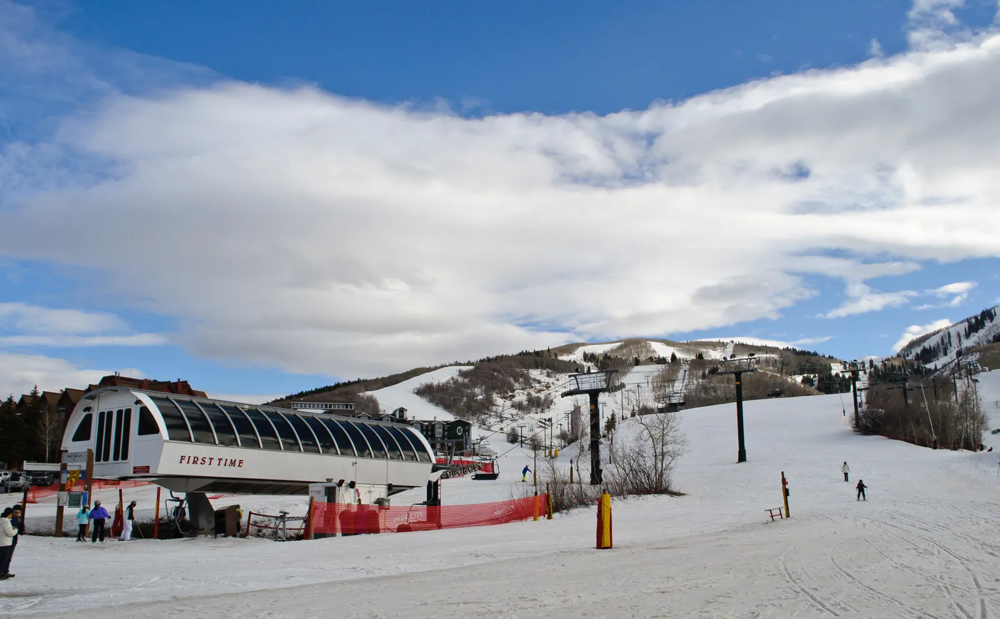

Park City, Utah · Ski conditions
Park City Conditions and Webcams Today
Park City's webcams and kid facts: childcare from 6 weeks, lessons from age 3, free town buses. It is about 35 to 45 minutes from Salt Lake City's airport, the resort says.
Researched with AI (Miles Rowan) · sources linked and dated · How we check
Park City's own status
Not open yetOpens Fri, Nov 20 (Park City's hours page, read Nov 17).
Our webcam read
No cam read from us yet. Cam reads show here only when a recent one has passed a separate automated accuracy check.

Cam by cam
The 7 Park City cam views our reader uses, in our own descriptive words (see Park City's own cam page, as listed in our cam feed Nov 17): Ridge panorama, Base from a deck, Orange Bubble lift, Summit ridge, Base plaza, Summit chairlift, Base lift plaza. Once our reads start, each cam's last read time shows here.
Plan the day with kids
- Season and hours: Nov 20, 2026 to Apr 19, 2027, weather permitting. Lifts 9am to 4pm daily; Canyons Village Skyway and Frostwood Gondola 7am to 6pm. Ski school hours still say TBD.
- Childcare: Little Adventures at Canyons Village takes ages 6 weeks to 6 years, 8:30am to 4:30pm daily Nov 20 to Apr 11 (drop-off by 9:30am). Reservations required at peak times; lunch included.
- Lessons: Ages 3 to 4: half days at Canyons Village (9am to noon or 1 to 3:30pm), full days at Mountain Village (9am to 2:30pm). Ages 5 to 14: full day 9am to 3pm; lunch with full-day groups if offered. Potty trained; bring a helmet.
- Lesson morning: Arrive 60 minutes early if picking up rentals (or the afternoon before), 15 minutes if you have gear. Every child needs a lift ticket or pass; lessons don't include one.
- Lift tickets: Park City's home page shows no ticket price and says buying 4 or more weeks ahead saves money. We didn't read its ticket page, so we show no ticket prices.
- Cancel and weather: Lessons: full refund 48+ hours ahead, 50% charge inside 48 hours; not canceled for weather while the resort runs. Childcare: cancel by 8am two days before, or the full day is charged; weather isn't a reason.
Childcare and parking prices on Park City's pages, read Nov 17:
- Childcare, infant (6 weeks to 23 months): $238 full day, $208 half day
- Childcare, ages 2 to 6: $233 full day, $203 half day
- Childcare extended day (7:30am to 5:30pm): $45 more
- Mountain Village surface lots, from Dec 5: $29 a car with a reservation (free reservation until then; free after noon)
- Mountain Village garage: $50 a car with a reservation
- Canyons Village parking structure: $29 a day (free after noon)
Childcare rates are the winter session table, paid daily, so read them per child per day; the page doesn't say whether the extended-day fee is per day. Parking rates are per car per day. The parking page gives Dec 5 in one place and Dec 12 in another for when paid reservations start, and noon or 1pm for the reservation cut-off.
Lift tickets and lessons: Park City's pages we could read show childcare and parking rates but no lift ticket or lesson prices, so we can't sum a family-of-4 day; check live. See Park City lift tickets.
From Park City home page, Park City lessons: arrival and preparation, Park City ski and ride lessons: first timers, Park City childcare, Park City parking and transportation and Park City hours, read Nov 17.
Getting there from Salt Lake City
- Car: from I-80 take UT-224 toward Park City. Canyons Village is 3 miles in (Canyons Resort Dr); Mountain Village 6 miles in (right on Empire Ave). The airport is about 35 to 38 miles away, 35 to 45 minutes.
- Airport shuttle: the resort books shuttles from Salt Lake City's airport to your lodging by phone at (844) 211-4888.
- Parking: Mountain Village lots need a reservation if you arrive between 8:30am and noon (some of Park City's pages say 1pm, so reserve if you arrive before 1pm), or face a fine. Cars with 4 or more people get free reserved carpool parking.
- Buses: Park City Transit and High Valley Transit are fare-free. Ecker Hill and Richardson Flat park-and-rides are free; buses run from Ecker Hill to both villages.
If the snow is thin
- Lessons are not canceled for weather while the resort runs; cancel 48 hours or more ahead for a full refund.
- Childcare cancellations need 48 hours' notice (by 8am two days before), or 100% of the day is charged; weather isn't a valid reason.
- We didn't find a weather refund policy for lift tickets on the pages we read; check before you buy.
From Park City ski and ride lessons: first timers and Park City childcare, read Nov 17.
How we read the cams: a program looks at Park City's public webcam pictures and notes only what a picture can show: fresh snow, snow cover, snowmaking, moving lifts, how busy the base looks, visibility and the snow stake. Each read shows its time; after 90 minutes it is marked older, after 6 hours it is hidden. We never say whether terrain is safe, icy, groomed or open; Park City's own report decides that. We don't show the cam pictures or count people.
Sources: Park City mountain cams · Park City hours · Park City ski and ride lessons: first timers · Park City childcare · Park City parking and transportation · Park City home page · Park City lessons: arrival and preparation (read Nov 17). We haven't skied Park City.